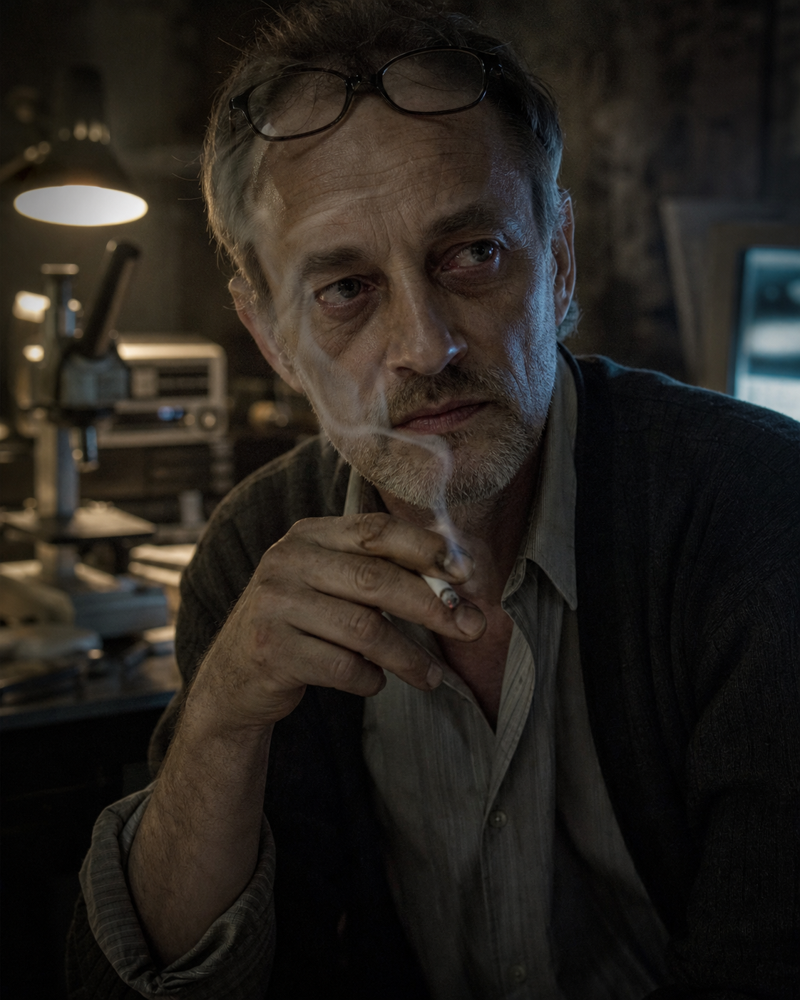
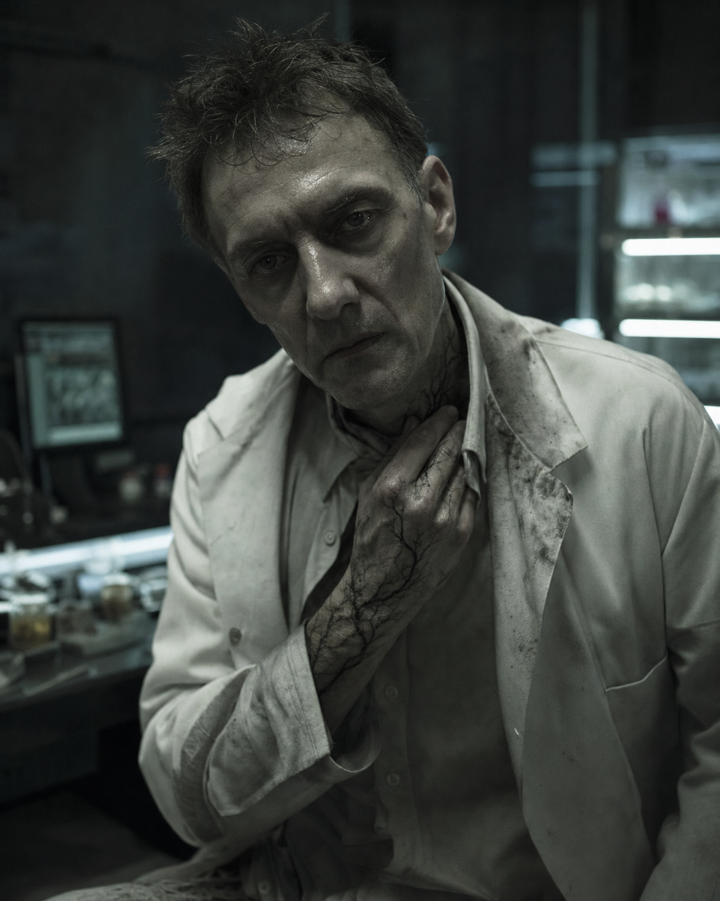

Richard
Besessene Hoffnung unter bleierner Erschöpfung.
Er ist noch Vater und Ehemann, noch nicht Monster. Der Keller wirkt warm genug, um Liebe zu behaupten, und eng genug, um sie in Besessenheit zu verwandeln.
Eine Bildstrecke aus den Projektprompts: nicht als Casting-Set, sondern als visuelle Subtext-Linie des Stücks. Wärme kippt in Laborlicht. Liebe wird Methode. Methode wird Vererbung.

Besessene Hoffnung unter bleierner Erschöpfung.
Er ist noch Vater und Ehemann, noch nicht Monster. Der Keller wirkt warm genug, um Liebe zu behaupten, und eng genug, um sie in Besessenheit zu verwandeln.

Ausgehöhlt, totäugig, gebrochene Entschlossenheit.
Der Forscher ist selbst Beweisstück geworden. Die schwarzen Fäden machen sichtbar, dass seine Methode längst durch ihn hindurcharbeitet.
Ruhige Klarheit, unbeirrte Zärtlichkeit.
Sie ist nicht das Opferbild des Films, sondern sein moralischer Fixpunkt. Ihr warmes Licht ist das, was die Laborszenen später verlieren.
Wache Kompetenz und leise Sorge.
Sie sieht klarer als Richard, aber sie liebt ihn noch. Ihr Blick trägt bereits die Rechnung, deren Ergebnis sie später nicht mehr zurückweist.
Gletscherkalte Ruhe, eine perfekt sitzende Maske.
Die Trauer verschwindet nicht. Sie wird versiegelt, sterilisiert und als Kontrolle wieder ausgegeben. Der schwarze Faden gehört jetzt ihr.
Geduldig, beruhigend, transaktional.
Er wirkt wie Sicherheit und verkauft Zeit. Sein sanftes Gesicht ist die Form, in der das System Richard die Erlaubnis gibt.
Bürokratische Distanz, Kalkül, milde Verachtung.
Keine Schurkenpose. Nur Verwaltung. Sie behandeln Leben als Bilanzposten, bis der Raum selbst zur Bilanz wird.